Flux de travail d'importation de modèles et de données
L'assistant est lancé à partir de l'icône de la barre d'outils ou de Base de données > Model Baker > Assistant d'import/export.
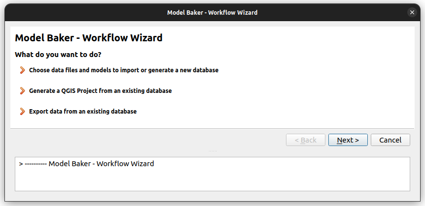
Pour [choisir les fichiers de données et les modèles à importer ou générer une nouvelle base de données] (#source-selection), suivez la description ci-dessous. Pour générer un projet QGIS à partir d'une base de données existante, allez au bas de ce guide. Pour exporter des données à partir d'une base de données existante voir le guide pour cela.
Note
L'assistant s'ouvre également lorsque vous déposez dans QGIS un fichier portant l'extension xtf, ili ou xml (xml uniquement lorsqu'il est déposé avec un fichier portant l'une des autres extensions).
1. Sélection des sources
La première page vous permet de sélectionner les sources à importer.
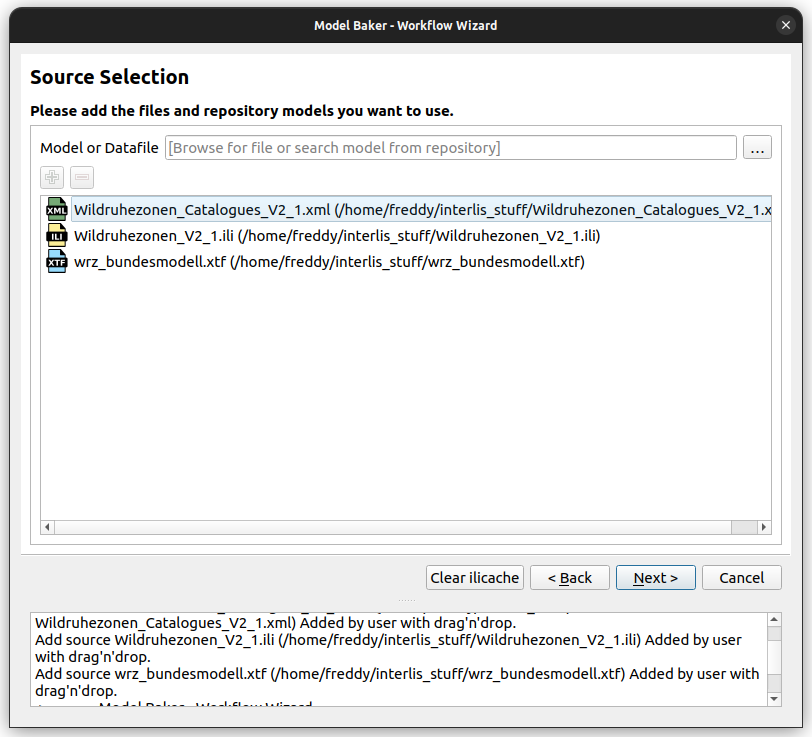
Modèle INTERLIS
Les sources peuvent être des modèles INTERLIS stockés dans des fichiers ili que vous sélectionnez sur votre système local (avec le navigateur de fichiers
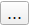
ou par glisser-déposer).Vous pouvez également rechercher des modèles INTERLIS dans les [dépôts] (../../background_info/repositories) ou les [répertoires de modèles personnalisés] (../plugin_configuration/#custom-model-directories). Étant donné que les noms de modèles doivent être indiqués strictement tels qu'ils ont été orthographiés dans les fichiers INTERLIS, une fois que vous commencez à taper, l'autocomplétion vous aidera à découvrir les modèles disponibles avec leur orthographe correcte. Ajoutez-les avec le .
Note
Les modèles provenant des dépôts sont mis en cache localement. Si vous souhaitez effacer ce cache, utilisez le bouton Effacer le cache.
Cela vous conduit à un processus de création de la base de données physique dans PostgreSQL, MSSQL ou GeoPackage.
Fichiers de transfert et de catalogue (fichiers de données)
Le xtf est un fichier de transfert INTERLIS, contenant des données spatiales et/ou alphanumériques stockées au format XML. Les catalogues ou les listes de codes sont techniquement les mêmes mais ont généralement l'extension xml.
La sélection des fichiers de données vous conduit au processus d'importation des données dans une base de données physique.
2. Sélection de la base de données
Dans tous les cas, il vous est demandé d'établir la connexion à votre base de données.
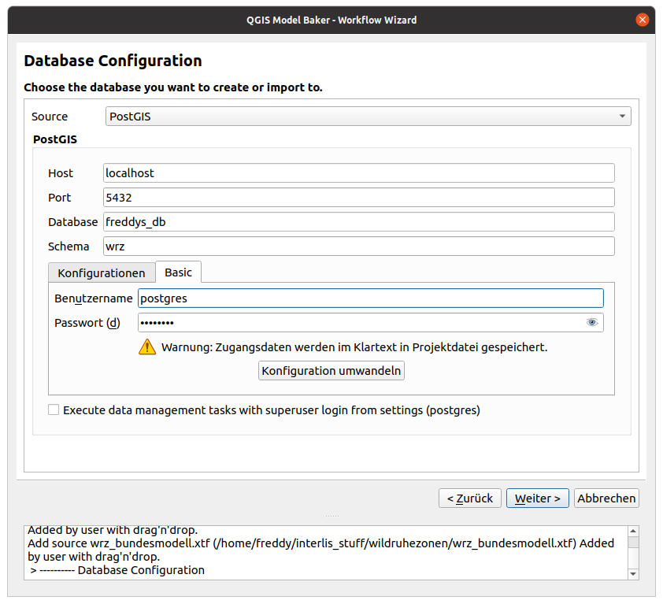
- Hôte de la base de données Définissez l'hôte du serveur de base de données. Par défaut, il s'agit de localhost.
- Port de la base de données Définir le port du serveur de base de données. La valeur par défaut est 5432.
- Nom de la base de données Définissez le nom de la base de données. La base de données doit déjà exister.
- Schéma de la base de données Le schéma agit comme un dossier, il vous aide à organiser les objets de la base de données tels que les tables et les relations et à les isoler d'autres schémas. Définissez le schéma de base de données dans lequel vous souhaitez créer le modèle physique ou importer les données du fichier de transfert. Vous pouvez même choisir un schéma existant dans lequel vous créez un nouveau modèle physique. Cependant, vous avez intérêt à savoir ce que vous faites, car cela écrasera les configurations antérieures d'ili2db.
- Utilisateur de la base de données Définir l'utilisateur pour accéder à la base de données.
- Mot de passe de l'utilisateur Définir le mot de passe de l'utilisateur de la base de données.
- Exécuter les tâches de gestion des données avec le login du superutilisateur à partir des paramètres Si cette option est cochée, elle utilise le login du superutilisateur (défini dans les configurations de l'extension pour les tâches de gestion des données telles que la création du schéma, etc.
3. Importation du modèle INTERLIS
Sélection du modèle
L'assistant Model Baker détecte les modèles INTERLIS à importer de différentes manières.
- Lecture du fichier
inilocal sélectionné. - Sélectionné dans les dépôts.
- Analysé à partir des fichiers de transfert ou de catalogue sélectionnés.
- Modèle dépendant d'un catalogue référencé dans le ilidata.xml des dépôts.
- Defined as ili2db attribute in the metaconfiguration received from the repositories. See UsabILIty Toppings.
Lorsque vous n'avez qu'un nom de modèle (comme dans tous les cas sauf celui des fichiers ini locaux), les modèles sont recherchés dans les dépôts ou les répertoires de modèles personnalisés. Il est possible que les modèles soient listés plusieurs fois et proviennent différentes sources. C'est à vous de choisir la source.
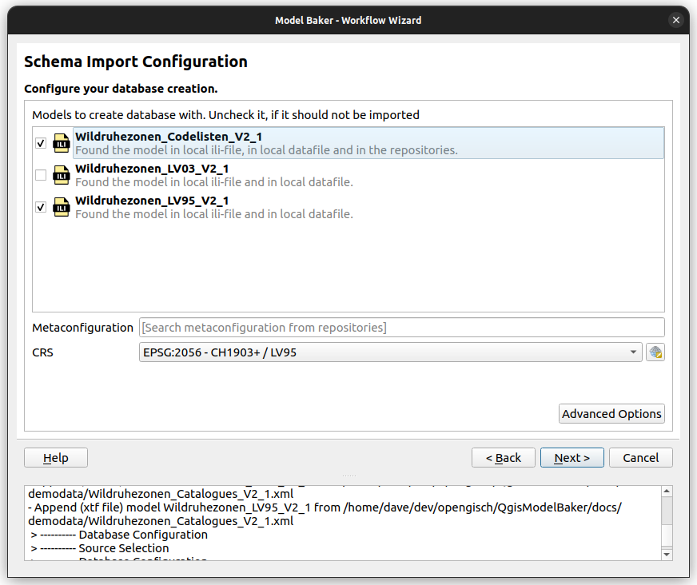
Vous pouvez cocher ou décocher les modèles que vous souhaitez importer dans un schéma physique.
Note
Via tooltip you can find the information where the model comes from.
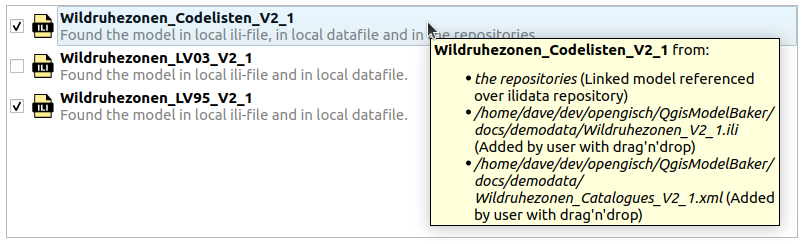
If our model requires (according to the ilidata.xml) a codelist and this codelist bases on a model that is not structurally linked (imported) to our model, it will appear here as well.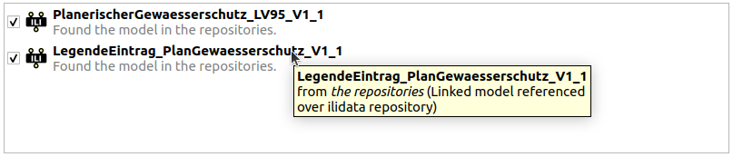
Métaconfiguration / Entête
Choose a metaconfiguration file found on the repositories to load ili2db settings and styling properties to your QGIS project.
Paramètres Ili2db
Comme Model Baker utilise ili2db, vous pouvez définir des options avancées qui déterminent la manière dont votre modèle conceptuel orienté objet est mappé dans un modèle physique.
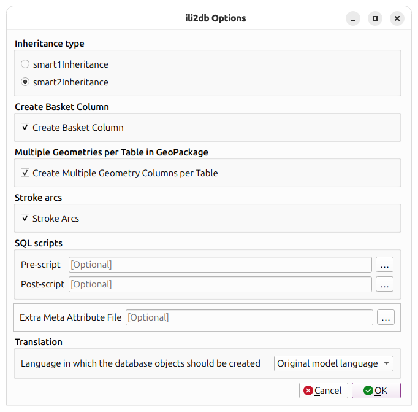
Type d'héritage
Ili2db vous permet d'utiliser trois types d'héritage :
- noSmartMapping permet de mapper toutes les classes du modèle INTERLIS source dans le schéma de la base de données cible. Chaque classe conserve tous ses attributs. Model Baker ne propose pas cette option dans les paramètres.
- smart1inheritance préfère créer des classes mères dans la base de données, à condition qu'elles remplissent certaines conditions spécifiques. Les attributs des classes enfants ne seront pas perdus, puisqu'ils sont transférés dans les classes parents.
- smart2inheritance : préfère créer des classes enfants dans la base de données. Les attributs des classes mères ne seront pas perdus, puisqu'ils sont transférés dans les classes filles.
Créer une colonne dans le panier
Cette option permet d'activer l'option Dataset and Basket Handling dans votre modèle physique.
Lorsque cette option est cochée, Model Baker passe --createBasketCol à la commande ili2db. Ili2db crée une nouvelle colonne T_basket dans les tables de classes qui fait référence aux entrées de la table supplémentaire t_ili2db_baskets. La colonne T_basket doit être remplie avec le panier auquel un objet appartient.
Note
Si BASKET OID est défini dans le modèle, il est nécessaire d'utiliser la gestion des paniers dans QGIS (nous devons créer le modèle physique avec le paramètre ili2db --createBasketCol). Ceci n'est actuellement pas détecté automatiquement par le Model Baker et doit être assuré par l'utilisateur.
Lorsque la gestion des ensembles de données et des paniers est activée, un ensemble de données par défaut appelé Baseset sera créé et la [page de création de paniers] (#create_baskets) apparaîtra après l'importation du schéma.
Arcs de cercle
Si cette option est activée, les arcs de cercle sont tracés lors de l'importation des données.
Scripts SQL
Vous pouvez définir des scripts sql qui s'exécutent avant et après l'importation (du schéma).
Fichier d'attributs méta supplémentaires
Un fichier toml ou ini peut contenir des valeurs pour meta attributes (comme qgis.modelbaker.dispExpression) au lieu de les avoir directement dans le fichier ili.
4. Exécutez les sessions ili2db
In the next step you can run all the sessions to create your physical model. In case a model is detected in an local ili-file (added by the user) and in the repositories, it takes the one from the local ili-file. If having multiple models that are received from the repositories, then they are passed in one command. You can run the commands one by one or all together.
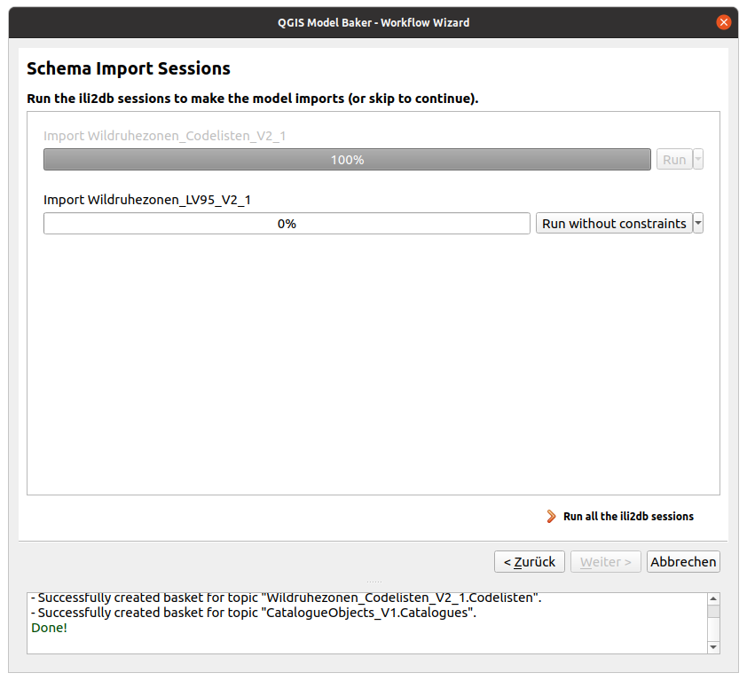
Le bouton situé à côté d'Exécuter permet d'exécuter la commande sans vérifier les contraintes ou d'éditer la commande manuellement avant de l'exécuter.
5. Créer des paniers
Si vous n'avez pas de données à importer dans votre jeu de données par défaut et que vous souhaitez collecter de nouvelles données dans QGIS, les paniers doivent également être créés. C'est à vous de décider pour quels sujets vous souhaitez créer des paniers. Model Baker vous suggère des paniers à créer et des valeurs raisonnables pour le BID (valeur dans le t_ili_tid) mais vous pourriez avoir besoin de les éditer.
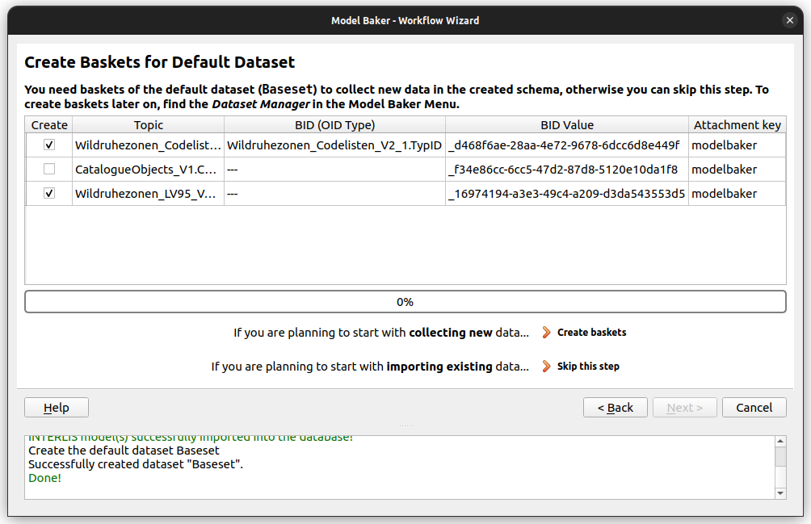
Si vous ignorez de quoi il s'agit, consultez [ici] pour plus de détails(../../background_info/basket_handling/#creation-of-baskets) ou appuyez simplement sur Créer des paniers puis Suivant.
6. Importation de données INTERLIS
Une fois que le modèle physique est généré ou que vous avez sélectionné une base de données existante pour importer vos fichiers de transfert ou de catalogue contenant déjà les modèles, vous verrez la page pour configurer vos importations de données.
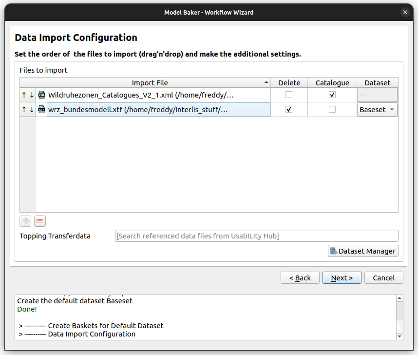
Ordre d'importation
Si l'ordre d'importation des modèles INTERLIS est sans importance (en général, voir exceptions), l'importation des données requiert souvent un ordre correct. Les données transférées dépendent souvent des données existantes du catalogue / de la liste de codes. Faites glisser et déposez vos fichiers avec
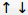
dans le bon ordre.Traitement des ensembles de données
L'option Dataset and Basket Handling n'est active que lorsque le modèle physique a été créé avec Créer une colonne dans le panier (--createBasketCol).
Si c'est le cas, les données sont importées avec le paramètre ili2db --update. Cela signifie que toutes les données existantes dans le même panier sont mises à jour (et supprimées si elles n'existent pas dans le fichier de transfert).
Sélectionnez le dataset dans lequel vous souhaitez importer vos données en double-cliquant sur le champ dataset. Si vous souhaitez créer un nouveau jeu de données, utilisez le [gestionnaire de jeux de données] (../../background_info/basket_handling/#dataset-manager). Les paniers sont créés lors de l'importation des données.
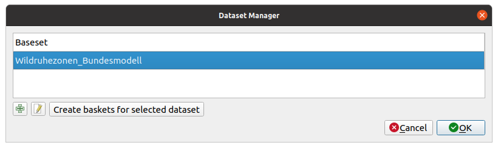
Si les données à importer sont un catalogue, veuillez cocher la case catalogue et elles seront importées dans un jeu de données conçu pour les catalogues (appelé catalogueset).
Transfer Data from the repositories
Not only meta data for ili2db and styling can be received over the ilidata.xml from the repositories. As well there can be found catalogue data referenced over the model name. This means Model Baker checks the repositories for all the models contained in the database schema. If it founds referenced catalogue data it provides them to you in the autocomplete widget. Add them with the (the needed models have been suggested in the INTERLIS model import already).
Check more information about the catalogues on the repositories here.
Effacer d'abord les données
Si vous souhaitez d'abord supprimer les données dans la base de données, vous pouvez cocher la case correspondante. Si vous utilisez des paniers, le paramètre ili2db --replace est exécuté à la place de --update. Si les paniers ne sont pas utilisés, le paramètre --deleteData est ajouté à la commande. Notez que si vous utilisez les paniers, seules les données du jeu de données correspondant sont supprimées, alors que si vous n'utilisez pas les paniers, toutes les données du schéma sont supprimées.
7. Générer le projet QGIS
Si vous souhaitez générer votre projet à partir d'une base de données existante, vous devrez d'abord [définir les paramètres de connexion] (#sélection de base de données).
Then, with a simple click you generate your project. All the toppings received from the repositories are considered here.
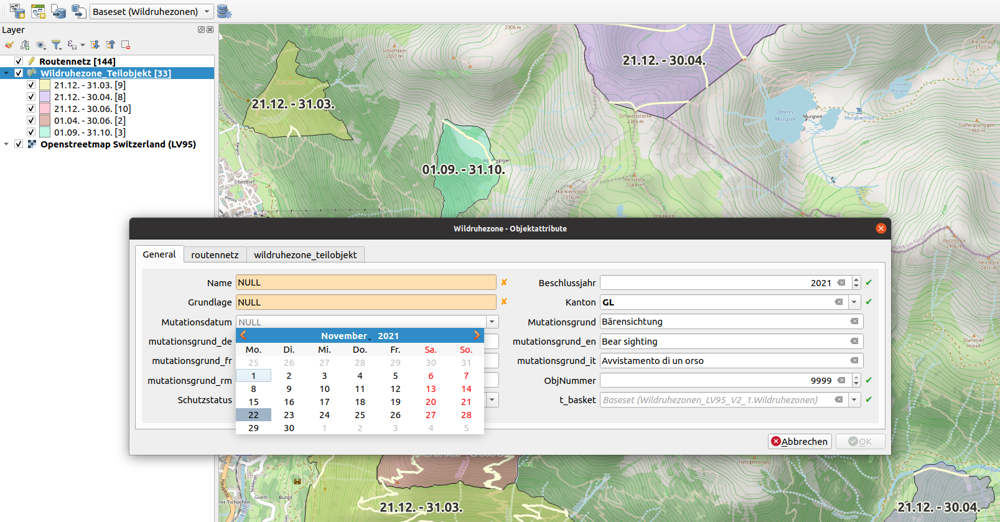
C'est aussi simple que cela. Vous pouvez néanmoins choisir d'autres options.
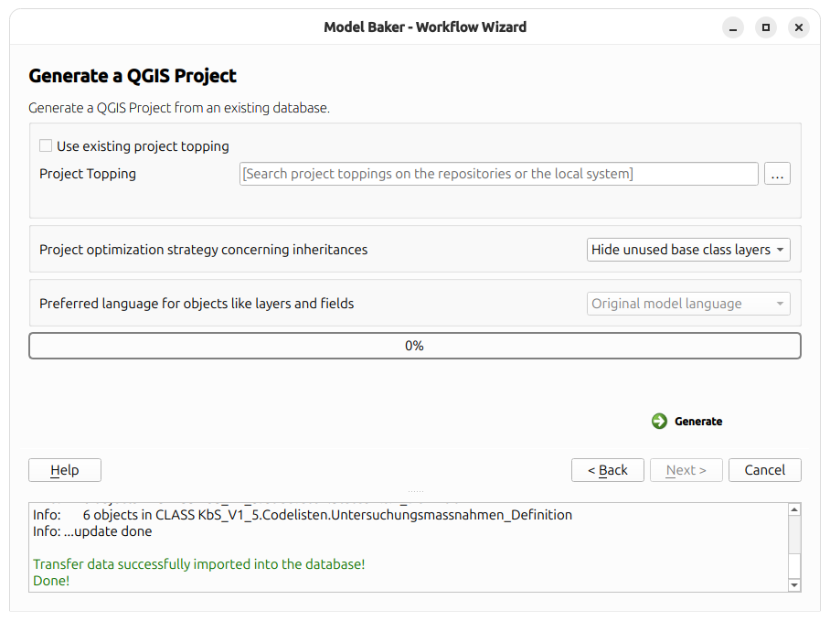
Choisir une entête de projet
Si vous avez déjà sélectionné un fichier de métaconfiguration précédemment et que ce fichier de métaconfiguration fait référence à un fichier d'entête du projet (fichier YAML contenant l'arborescence des couches et les liens vers les fichiers de style des couches), il est pris en compte par défaut. Si vous créez le projet à partir d'une base de données existante, Model Baker vérifie si ce schéma a été créé avec un fichier de métaconfiguration à prendre en compte ici. Si ce n'est pas le cas, ou si vous souhaitez simplement sélectionner un fichier différent, cette option est également disponible. Obtenez le fichier de tête de votre projet à partir des dépôts ou de votre système local.
Optimiser le projet QGIS s'il est étendu
Dans le cas où vous gérez votre projet pour une structure de modèle étendue qui a été créée avec smart2inheritance, vous pouvez alors l'optimiser (masquer ou regrouper les couches et les relations inutilisées).
Choisissez votre stratégie d'optimisation dans la case à cocher :
- Cacher les couches inutilisées de la classe de base Les couches de classes de base avec les mêmes extensions nommées seront cachées et les couches de classes de base avec plusieurs extensions aussi. Sauf si l'extension est dans le même modèle, alors elle ne sera pas cachée mais renommée.
Les relations des couches cachées ne seront pas créées et avec elles aucun widget.
- Grouper les couches inutilisées de la classe de base Les couches de classe de base avec les mêmes extensions nommées seront collectées dans un groupe et les couches de classe de base avec des extensions multiples aussi. Sauf si l'extension est dans le même modèle, alors elle ne sera pas regroupée mais renommée.
Les relations des couches groupées seront créées mais les widgets ne seront pas appliqués au formulaire.
Note
Vous pouvez également optimiser les projets créés avec smart1inheritance. Dans ce cas, il ne fait qu'ajouter les valeurs de type pertinentes au menu déroulant t_type dans le formulaire, lorsque Masquer les types de classe de base inutilisés est sélectionné. L'optimisation du « regroupement » n'a pas de sens pour smart1inheritance.
Pour plus d'informations sur l'optimisation des modèles étendus, voir le chapitre correspondant.
8. Valeurs de l'OID
Souvent, la définition des modèles nécessite des identificateurs uniques intersystèmes. Il s'agit des OID, qui sont représentés dans la base de données physique par la colonne t_ili_tid. Vous trouverez une définition claire et plus de détails à ce sujet dans le [chapitre correspondant] (../../background_info/oid_tid_generator).
Lors de la création d'un projet QGIS avec Model Baker, il y a des expressions de valeurs par défaut prédéfinies générées pour le champ t_ili_tid sur le formulaire d'attribut. Mais souvent, ces expressions de valeurs par défaut doivent être modifiées par l'utilisateur (comme par exemple le préfixe dans le champ STANDARDOID).
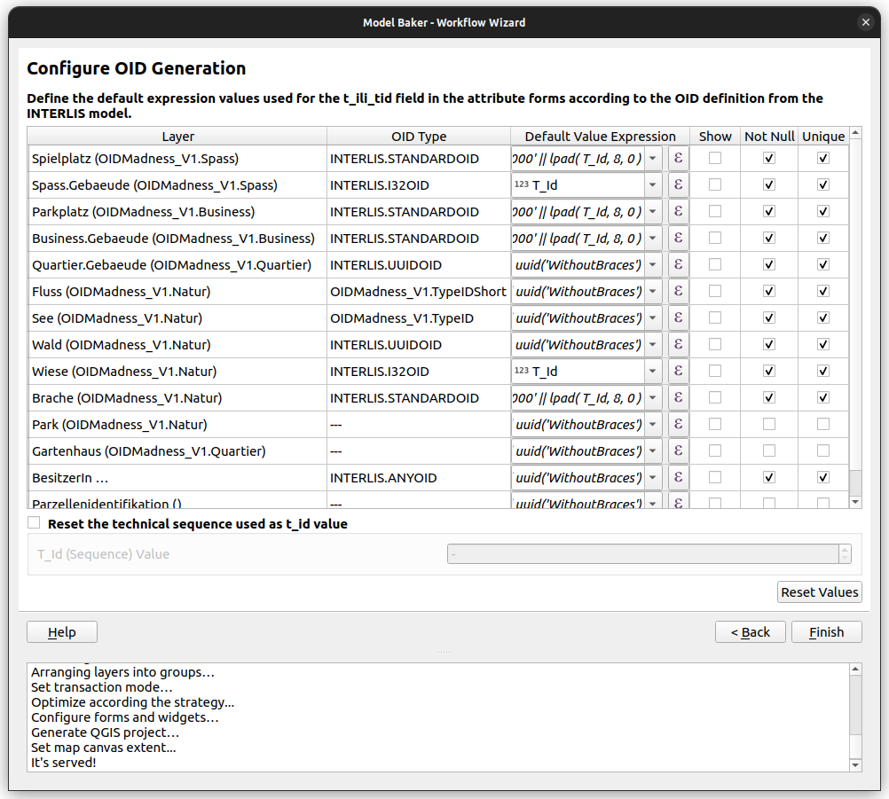
Ici, vous pouvez utiliser la boîte de dialogue d'expression de QGIS pour modifier l'expression de la valeur par défaut pour le champ t_ili_tid de chaque couche.
Si vous avez besoin d'un compteur dans les expressions, vous pouvez utiliser le champ t_id, qui a une séquence de comptage à l'échelle du schéma. Cette séquence peut également être réinitialisée par l'utilisateur, mais faites attention à ne pas la fixer plus bas que les t_ids déjà existants dans votre projet.
Ces réglages peuvent également être effectués sur un projet QGIS existant. Trouvez le OID Manager via le menu Base de données > Model Baker.